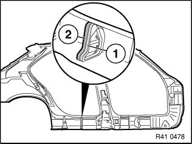

41 00 ... Installing A Cavity Acoustic Baffle (Not Expanded)
41 00 ... Installing a cavity acoustic baffle (not expanded)

NOTE: Carry over schematic representation to the relevant vehicle type.
The following repair represents replacement of a cavity bulkhead.
Before these work steps, prepare the new part so that it is ready to install (adapting, cutting to size, applying welding primer etc.).

Sand contact surface of cavity acoustic baffle (1) with coarse-grained sandpaper (grain 50-100).
Clean contact surface (1) with cleaning agent R2.
Apply a bead approx. 15 mm high of sealant D1 to contact surface (1).
If necessary apply sealant D1 somewhat thinner on each side, to prevent the sealant from running.
Attach cavity bulkhead in specified position (see old part).
Fit, secure and weld up new part.
WARNING: Ensure adequate ventilation over entire processing period.